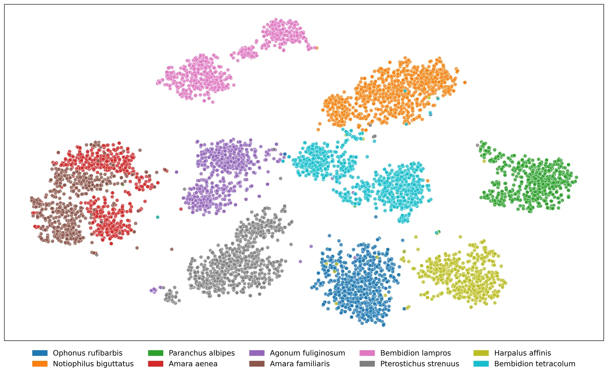

Fine-Grained Beetle Taxonomy with Vision Models: A Benchmark on Long-Tailed and Domain-Adaptive Classification
ICCV 2025 Workshop on Computer Vision for Ecology (CV4E)

Frozen vision-language encoders with a light probe separate 1,769 near-identical classes at 94% accuracy, need half the labels, and still lose a third of their accuracy under lab-to-field domain shift.
Fine-grained recognition tests vision models where classes differ in sub-millimeter detail, labels follow a long tail, and deployment images look nothing like training images. Ground beetles have all three properties, with 1,769 species across more than 230 genera.
We benchmark 12 encoders from three families, self-supervised, supervised and vision-language, by linear probing on frozen embeddings over four datasets that range from curated lab images to field photographs. We then test the two settings that decide whether automation is practical: limited labels and a change of imaging domain.
Benchmark at a glance
| Images | 100,885 |
|---|---|
| Classes | 230+ genera, 1,769 species, strongly long-tailed |
| Datasets | BeetlePalooza (NEON vials), BeetlePUUM (Hawaii, pinned), NHM-Carabids (Natural History Museum, London), I1MC (Insect-1M field images) |
| Encoders | Self-supervised: DINOv2, ViT-MAE, SwAV, MoCo v3. Supervised: Swin V2, BEiT, LeViT, ConvNeXt. Vision-language: CLIP, BioCLIP, SigLIP, ViLT |
| Protocol | Frozen embeddings with linear and MLP probes at genus and species level; BioCLIP zero-shot as the baseline |

Findings
- Vision-language pretraining wins under probing. ViLT with an MLP head reaches 97.15% genus and 93.97% species accuracy on the merged data.
- Zero-shot is not enough. BioCLIP gets 77.37% at family but 3.21% at species without training.
- Labels can be halved. Training on 50% of the data leaves accuracy largely unchanged.
- Domain shift is the hard part. Models transfer between curated collections, but accuracy drops by up to 37% on field images with clutter, occlusion and unusual viewpoints.




Related work
BeetleVerse: A study on taxonomic classification of ground beetles
CVPR 2025 Workshop on CV4AnimalsMind the (Data) Gap: Evaluating Vision Systems in Small Data Applications
NeurIPS 2025 Workshop on ImageomicsHow Finely Can Vision-Language Models See Biology? Bio-VQA: A Benchmark for Taxonomic, Morphological, Spatial and Individual Reasoning
IEEE/CVF Winter Conference on Applications of Computer Vision (WACV 2027)
Cite
@inproceedings{rayeed2025finegrained,
title = {Fine-Grained Beetle Taxonomy with Vision Models: A Benchmark on Long-Tailed and Domain-Adaptive Classification},
author = {Rayeed, S M and East, Alyson and Stevens, Samuel and Record, Sydne and Stewart, Charles V.},
booktitle = {Proceedings of the IEEE/CVF International Conference on Computer Vision (ICCV) Workshops},
year = {2025}
}